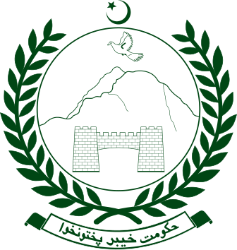
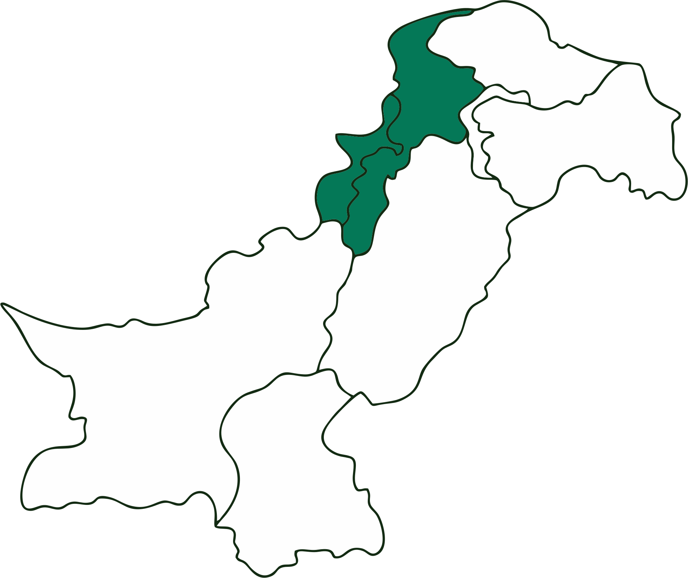

Provincial Flag

Government Emblem
Location

Overview
Land of the Pashtuns
Formerly known as the North-West Frontier Province (NWFP), Khyber Pakhtunkhwa is the heartland of the Pashtun people. It is famous for its stunning natural beauty, ranging from the fertile Peshawar valley to the snow-capped peaks of the Hindu Kush.
The province serves as a historic gateway to Central Asia and is renowned for its unique code of life, Pashtunwali, which places immense value on hospitality (Melmastia), honor (Nang), and revenge (Badal).